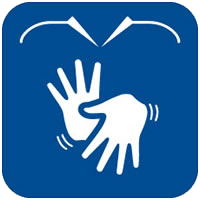

O DeepLIBRAS é um projeto de pesquisa que tem como principal objetivo gerar um agente com Inteligência Artificial (IA) capaz de traduzir a Língua Brasileira de Sinais para o Português. Esperamos que este projeto aproxime a comunidade surda às comunidades ouvintes que não falam LIBRAS.
Para realizar tal tarefa lançamos mão de várias técnicas estatísticas e de aprendizagem de máquina, como por exemplo: i) Maximal Information Coefficient; ii) Multilayer Perceptron Neural Network; iii) Recurrent Neural Network; iv) Deep Learning; v) Hidden Markov Models, dentre outras.
 No dia 19 de maio de 2016 às 19h30 será realizado o "1º Encontro para Coleta de Sinais da LIBRAS" e você, surdo, intérprete ou profissional proficiente em LIBRAS está convidado a participar! Participe e ajude a construir uma ferramenta para auxiliar na Inclusão Social de surdos e na divulgação da LIBRAS!
Local: Instituto Federal de Educação, Ciência e Tecnologia de São Paulo - Câmpus Caraguatatuba. Avenida Rio Grande do Norte, 450 - CEP: 11665-310, Indaiá - Caraguatatuba, São Paulo.
Mais Informações: deeplibras@ifspcaraguatatuba.edu.br.